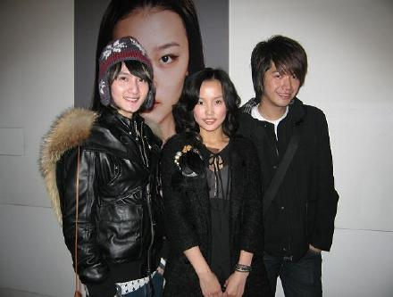

前两天和好朋友一起看摄影教父的展览,因为看的非常投入,忘记用自己相机和教父留影了...
张文华-我的靓仔导演-也是靓仔摄影师，香港最有名的金牌摄影师。10多年来几乎香港所有大牌明星的唱片照和广告照均以他操刀为荣，其中梅艳芳、张国荣、TWINS、郑秀文、王菲、黎明更是將其视为「御用班底」。而内地明星他也合作很多，除巩俐、章子怡外，赵薇早前轰动一時的纤体广告也是他的得意之作。我的第一张专辑<痒>里面我最爱的主打歌红眼睛也请靓仔导演来拍,大家可以上百度搜索"黄龄红眼睛"再来回味靓仔导演镜头中神经质的我,在废弃的钢铁厂,坐着轮胎荡秋千,只有黑气球和古董娃娃陪着我在浴缸里玩...<红眼睛>是去年4月拍的,一年里,每天经过卢浦大桥回家都会看到那个工厂,那个寂寞的工厂,去年4月是多么的不寂寞,有靓仔导演,有靓女化妆师,还有很用心很可爱的工作人员,还有我的副总王惟懿老师.但去年12月4日,我的王老师很不幸带着肚子里的宝宝永远离开了我们555.
那天展览上看到了很多一起帮助我拍<红眼睛>的人,看到他们很亲切也有一种说不出的失落,时间真快,一年了,大家都在,王老师却不在了,连寂寞的钢铁厂也没有了...很想念很想念
虽然向鼎同学戴着小花帽,但还是被记者逮到访问了一翻,在未观展之前就被逮到的,所以我不知道他访问的时候说了些什么...
